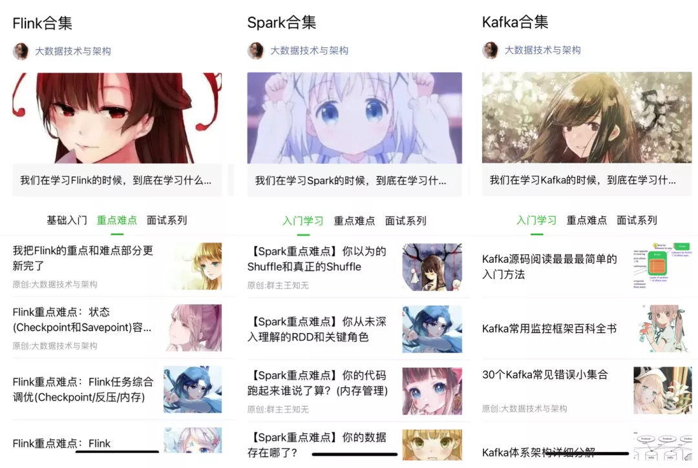
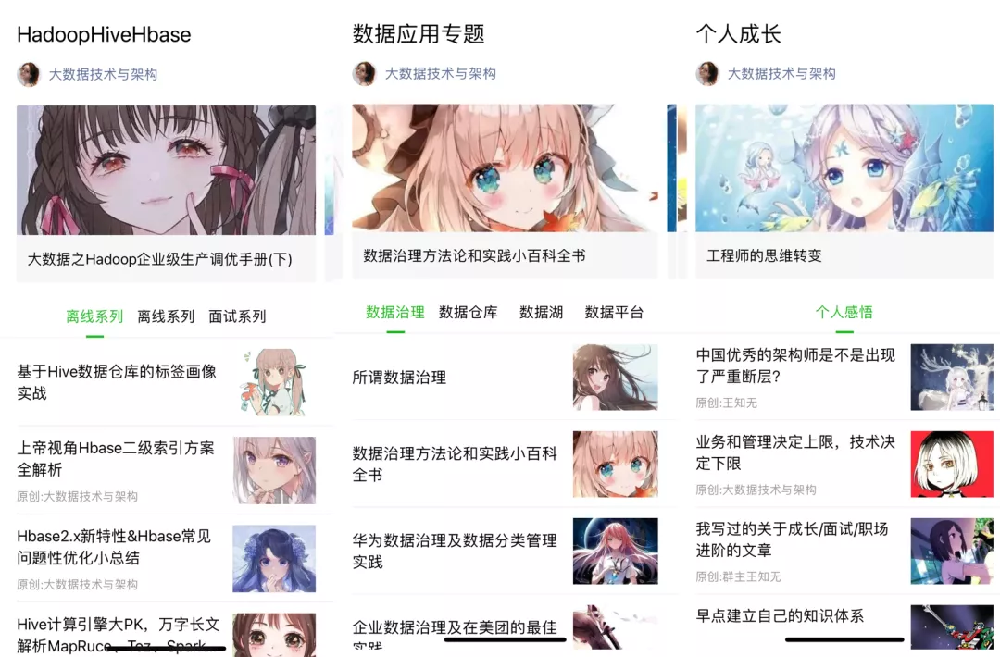

我在云栖社区读硕士，大数据专业
收录于话题
点击上方蓝色字体，选择“设为星标”
回复”面试“获取更多惊喜

前言
本篇文章是《我在B站读大学，大数据专业》的姊妹篇。
我在2021年中旬写过一篇文章《八千里路云和月|从零到大数据专家学习路径指南》，这篇文章是一篇大纲性质的文章。给出了一个基本的大数据方向的学习路径。
这篇文章将在2022年的1月1日完成重写升级并且在公众平台首发。整个2022年，大数据领域的变化非常之大，我根据个人从业经历和一些对未来的思考，把整个大数据领域的技能模型进行了一版升级。目前已经完成大部分的编写工作，正在校对和审稿中。如下图：
我在之前的《我在B站读大学，大数据专业》一文中给出了整个大数据体系B站教育板块中各个方向的优质视频。涵盖了从基础、框架、项目的几乎所有的我个人觉得比较好的资源。
这篇文章是「提高篇」。
为什么要写这个提高篇？
再过去的10年间整个数据领域基本完成了从0到1的建设，大数据平台成为了各个公司的基础设施，尤其是公有云的发展。以AWS和阿里云等这些头部公有云平台的发展为例，这些平台提供了大数据领域几乎100%的基础建设，不在需要招聘一大堆的开发和运维人员从0建设大数据平台以及配套的基础设施。很多企业都选择了这些公有云平台直接购买。
再者，各大小公司基本走完了基础平台的建设期，并且有各大公司现成的经验可以借鉴，所以使得「建设成熟稳定的大数据基础设施」变得没有那么困难。新人很难再有这样练兵的机会。
什么意思呢？2020年及以后从事这个行业的新人不会再有5年前那种从最底层开发到完整建设大规模数据平台的机会了。 这导致了新人在技术能力上的天然弱势。就像和平时代的军队没有经过战争的洗礼，当新的「战争来临」，最新阵亡的都是新兵。
基于此，我写出了这篇文章。
云栖社区
我们来看一下简介：
阿里云开发者社区覆盖云计算、物联网、大数据、云原生、数据库、人工智能、微服务、安全、开发、运维等技术领域,集合阿里巴巴经济体各个单元技术优势。
阿里云开发者社区集合阿里巴巴经济体各个单元技术优势，提供分享、交流、学习、认证、工具、资源、大赛、活动、创业等一站式服务能力，满足开发者全生命周期成长需求。
大家不要觉得啰嗦，这个简介就是整个阿里云栖社区的最终定位。所有围绕云栖社区的建设都是基于这样的构想而进行的。
今天我们介绍的就是它的大数据板块，我们直接给出网址：
https://developer.aliyun.com/community/bigdata
在首页的左上角你可以看到更多的的子目录：
如果你需要从大数据扩展到其他领域的学习，那么你能看到更多的板块，去对应板块寻找资源。
关键用法
云栖社区里的内容非常庞大，虽然很多文章和资源都是介绍阿里云相关的产品，但是你可以找到很多官方和个人博主总结的电子书和问答内容。
下面我介绍几个关键的内容，教大家怎么用好这个社区。
电子书区
你可以通过首页的「电子书」标签进入这个板块，这个板块又被称为「藏经阁」，这里面有非常多的电子书可以直接下载。包括「书架上新」「阿里精选」「技术实战」等板块。
这里的电子书质量非常高，比如整个Java开发领域奉为圭臬的「Java开发手册」，就出自这里。
这里面关于大数据的电子书也非常多，很多都是阿里云的专家进行的总结，深度远超任何博客。比如我经常看的「Redis最佳实践和实践指南」、「Apache Flink十大技术难点实战」等等，更多的书大家可以自己去找。
在「藏经阁」下有一个栏目叫做「职业发展」，这里面的内容需要工作5年以内的开发要好好读一读，基于整个数据开发方向的技术栈和未来进阶的方向上的指引，这里已经有很多大佬总结好了。相信能给你解答很多困惑。
产品讨论(问答区)
这个问答区，在大数据领域应该是一个比较好论坛板块了。当然有些回答不是很及时，或者很多讨论阿里云产品的，但是阿里云的产品很多都和开源的产品有对应关系。
大数据领域的问题不比Java或者Go等的后端开发，首先问题的难点不是一个数量级。也就是说，大数据领域的难点比后端开发解决起来要困难的多。因为导致某一个现象的原因可能有很多，对回答者的技术栈深度和广度要求比后端高太多太多，根本不在一个级别。
比如你的问题是「如何计算pv/uv」?，这样的问题很难回答，需要的前置条件太多，比如你是基于Spark还是基于Flink，你是实时统计还是SQL查询？所以大数据领域的问题一般都是方向性的。
这个板块的问题，大家可以好好看看。看看业界的做法一般都是什么样的。
学习路线&进阶区
这个部分不在多言，如果你需要在某一个领域深造，那么首先方向不能错，否则一切都是徒劳的。
这个板块不仅给出了学习路线，你学习完成后还可以测试一下你掌握的程度。也就是「技能自测」区，如下图：
公开课
这里有很多公司技术专家、技术负责人、CTO级别的技术分享，你可以看到很多大的公司在某一个领域是怎么做的，而且大都是高清的视频。
比如你所在公司也是电商行业，需要做搜索，那么你可以参考：
看看别人是怎么做的？不要局限在某一段代码的开发，某一个技术点学习上。这种方向上的把握是大家未来进阶必须要经历的过程，否则你永远只能待在最一线做基础的开发工作。
活动&训练营
这个板块是很多线上的训练营和活动的发布地址，你可以在这里看到很多训练营的活动。虽然有的是基于开源的，有基于阿里云产品的，但是没有关系，总有一些适合你的，比如Apache Flink的极客挑战赛活动。

热门技术圈
这个就是大家最关注的一些圈子了。热度很高的圈子自然可能就是未来发展的重点，有时间不妨多跳出自己目前从事的这个方向，看看其他的圈子都在做什么。
总结
整个云栖社区的大数据板块还有非常多的宝藏等待大家自己去发掘。整个云栖社区大数据体系，无论是从质量还是广度上，都远超其他任何博客的大数据板块。
而且据我所知，很多博客网站都没有大数据这个板块...
如果这个文章对你有帮助，不要忘记 「在看」 「点赞」 「收藏」 三连啊喂！
Hi，我是王知无，一个大数据领域的原创作者。
放心关注我，获取更多行业的一手消息。




Flink CDC我吃定了耶稣也留不住他！| Flink CDC线上问题小盘点
4万字长文 | ClickHouse基础&实践&调优全视角解析